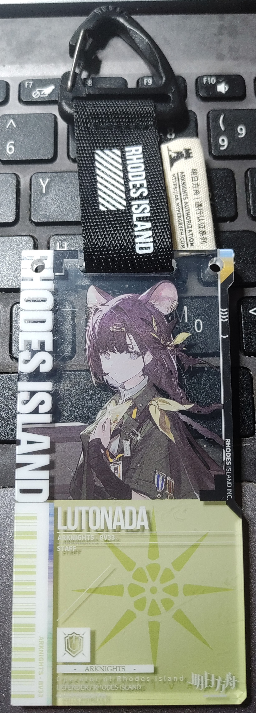

被紧急加更的鲜花
Last Update:
手稿写于 4/2
等一下！请你注意这是一篇紧急加更的鲜花！一般来说由于昨天写的鲜花篇幅较长，今天可能不更或者写得较短。但现在这是个特殊情况，因为就在刚才发生了一件特殊的事情！我们伟大的年级安排缩短了数学测试的世界并增添了一节仔细，好从邪恶的全校活动中为高三抢来十五分钟的自习时间，这样等我们在去参加时就与春晚只看《难忘今宵》无异，这样就省下了更多的放学时间用于学习。不过这并不是我说的特殊情况，特殊的时我们中竟然有对这完美安排的异议，它们不能体谅年级的良苦用心，不懂得感恩戴德，不懂得年级的恩情永远还不完啊！真是可耻的高三败类，所以我决定将安排的时间全部用于紧急地加更一篇额外的鲜花用于批判这种无耻行径！
但是鲜花并不是发表社论的地方，所以接下来的正文中我将沿用鲜花中常见的隐喻与讽刺的手法，但是请大家务必记住今天的主题原来是什么！
正文：
众所周知，规则是用来打破的，比如规定双休我就单休，单休没被管那就可以不休，规定的放学时间太多了我就缩短一点，只有不断地打破规则，才能不断顺应时代的发展，这是毋庸置疑的真理。再比如权威是应当被质疑的，比如权威说要有良好的环境，我看就未必，你想一栋楼只有两个厕所，坏了一个我拖着不修，这样它们就会少厕所，在排队时间忽略不计的前提下就节省了上厕所的时间；再比如我禁止它们抄近路，这样它们就自发地奔跑以缩短时间。这些权威的管理规则真是太好用了，真是无敌了，无敌了。
那我们怎么打破规则呢？EZ，我们制定新的规则，有句新话说得好：“规则就是规则，又不是今天才定的。”它告诉我们要尊重即使只制定了一个月的规定，那么今天刚制定的规则岂不是更重要？时代，马上广播十分钟，告诉它们这个道理（顺带说一些，虽然一会测试是会有 40~60db 的干扰，但是大家一定要沉得住气，不要辜负了为大家争取的时间）。不过注意到制定规则时少用“禁止”的字眼，这样它们就看不出意图了，只要把看出来的都按下去，这样就皆大欢喜了。
怎么按下去呢？方法有很多，比如说我们可以通过阴阳怪气来打击它们的自尊心，再比如我们可以让它们不能晚自习而去写检查，这样为了高考，它们自然不会再造反，再比如我们可以从历史中学习经验，用岳飞的事迹来教育它们，因为我们是早已禁止录音笔了的。
因为不听的都会滚蛋，所以所有的都听话。
正文：
刚刚想起了多头的《马说》，欸一定有人就问我是哪一派人了。可是后天就是清明了我不太方便回答这个问题，不过我可以引用一段教科书上的话：“还有伦理学家认为，生殖性克隆人是在人为制造在心理上和社会地位上都不健全的人，严重地违反了人类伦理道德，是克隆技术的滥用。”你觉得我的引用合适吗？
还有就是从某个角度看这篇鲜花的正文并不长，正文以外的部分就当加量不加价吧！反正我写的鲜花都是免费的。
还有就是你可能会问隐喻的手法去哪里了？这样子哦，我告诉你非正文内容是想象的动物庄园的身高考核分类制度，简称高考，高三就是高度为第三级的意思。
我去味太冲了没绷住。
另：虽然我不做椭圆，但是测试的椭圆实在水到没变，根据其他反馈来看，我应当引用一句话：“我渐渐意识到，自己都觉得没那么有趣的题目，别人凭什么觉得有趣？远远超过三小时的汗水，才值得几百人为一场比赛花上三小时。”
等一下！

我是说露托真的很可爱，去年刚见到的时候就这么觉得了，然后 4/2 见到立刻就决定了！幸好没人跟我抢，因为早就抢光了。哈！